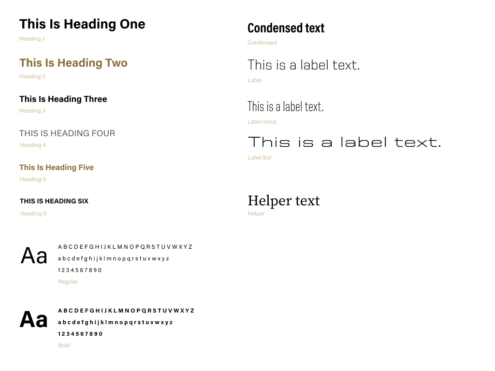

Working with Design Systems
Krannert Computing Center // Figma & Bootstrap.js
What are Design Systems?
A design system is basically a style guide that's collaborative, living, and code-connected. It's shared across the whole team, including designers, developers, product managers, etc.
Our Design System
I first helped design our new Style Guide for our new framework in Figma. This guide included our most used assets- all of which needed to follow Purdue brand guidelines as well.
- Typography 
- Color Palette
- Buttons
- Alerts
- Cards
- Form Inputs


These then became Bootstrap 5 components, which I helped to create the styling using saas as well the components themselves.
Along with the components, I designed a new login page as well as our error pages using UX best practices research. I then created these in Bootstrap 5, and handed off the pages to the developers to connect it to our backend.
Redesigned Login Page
My updates are both aesthetic as well as functional. The page will now load much smoother with Bootstrap components, and users are more easily able to move between the possible pages.
Redesigned Error Pages

The new error pages provide ways for the user to recover from the error they are seeing.